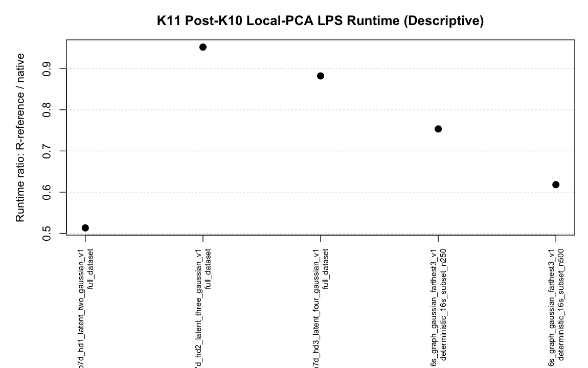
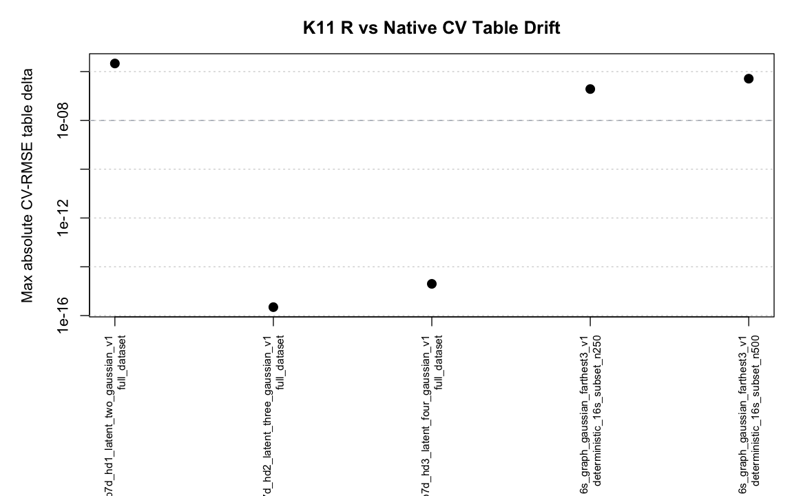

Generated 2026-06-04 22:59:46 EDT.
backend = "cpp.local.pca" reproduce the R-reference local-PCA LPS path on focused high-dimensional and 16S-style rows?K11 supports using `cpp.local.pca` as an explicit opt-in backend on the focused high-dimensional and 16S-style panel because the effective selected models, fitted values, and Truth-RMSE values match the R reference. It does not support promoting the native backend to `backend = "auto"`; runtime is descriptive only and remains size- and geometry-dependent.
Descriptive median runtime ratio R/native: 0.7535x. This runtime number is not treated as durable speed evidence. Max absolute CV-RMSE delta: 0.0000021459. Max fitted-value delta: 0.0000000000000046629. Max Truth-RMSE delta: 0.000000000000000083267.


| comparison.status | dataset.count |
|---|---|
| cv_numeric_drift_selected_stable | 3 |
| safe_machine_precision | 2 |
| truth.id | geometry.family | analysis.sample.policy | n | ambient.dimension | candidate.count | selected.same | selected.chart.dim.same | max.abs.cv.rmse.delta | max.abs.fitted.delta | truth.rmse.delta.cpp.minus.auto | runtime.speedup.auto.over.cpp | comparison.status |
|---|---|---|---|---|---|---|---|---|---|---|---|---|
| p7d_hd1_latent_two_gaussian_v1 | controlled_highdim | full_dataset | 200 | 100 | 84 | TRUE | TRUE | 0.000002146000000000 | 0.000000000000004663 | 0.00000000000000008327 | 0.5133 | cv_numeric_drift_selected_stable |
| p7d_hd2_latent_three_gaussian_v1 | controlled_highdim | full_dataset | 400 | 100 | 84 | TRUE | TRUE | 0.000000000000000222 | 0.000000000000003109 | 0.00000000000000001388 | 0.9522 | safe_machine_precision |
| p7d_hd3_latent_four_gaussian_v1 | controlled_highdim | full_dataset | 600 | 99 | 84 | TRUE | TRUE | 0.000000000000001998 | 0.000000000000002220 | -0.00000000000000004163 | 0.8822 | safe_machine_precision |
| p7d_16s_graph_gaussian_farthest3_v1 | real16s | deterministic_16s_subset_n250 | 250 | 178 | 84 | TRUE | TRUE | 0.000000192300000000 | 0.000000000000002665 | 0.00000000000000002776 | 0.7535 | cv_numeric_drift_selected_stable |
| p7d_16s_graph_gaussian_farthest3_v1 | real16s | deterministic_16s_subset_n500 | 500 | 178 | 84 | TRUE | TRUE | 0.000000511500000000 | 0.000000000000003553 | 0.00000000000000000000 | 0.6182 | cv_numeric_drift_selected_stable |
| truth.id | analysis.sample.policy | run.label | backend.used | chart.dim | selected.support.size | selected.degree | selected.kernel | selected.cv.rmse.observed | truth.rmse | runtime.seconds |
|---|---|---|---|---|---|---|---|---|---|---|
| p7d_hd1_latent_two_gaussian_v1 | full_dataset | auto | R | 25 | 34 | 1 | gaussian | 4.4500 | 0.15660 | 9.879 |
| p7d_hd1_latent_two_gaussian_v1 | full_dataset | cpp.local.pca | cpp.local.pca | 25 | 34 | 1 | gaussian | 4.4500 | 0.15660 | 19.250 |
| p7d_hd2_latent_three_gaussian_v1 | full_dataset | auto | R | 2 | 27 | 2 | tricube | 0.1362 | 0.05584 | 13.320 |
| p7d_hd2_latent_three_gaussian_v1 | full_dataset | cpp.local.pca | cpp.local.pca | 2 | 27 | 2 | tricube | 0.1362 | 0.05584 | 13.980 |
| p7d_hd3_latent_four_gaussian_v1 | full_dataset | auto | R | 3 | 29 | 2 | tricube | 0.2504 | 0.09672 | 20.410 |
| p7d_hd3_latent_four_gaussian_v1 | full_dataset | cpp.local.pca | cpp.local.pca | 3 | 29 | 2 | tricube | 0.2504 | 0.09672 | 23.130 |
| p7d_16s_graph_gaussian_farthest3_v1 | deterministic_16s_subset_n250 | auto | R | 5 | 33 | 1 | gaussian | 0.6118 | 0.18000 | 12.030 |
| p7d_16s_graph_gaussian_farthest3_v1 | deterministic_16s_subset_n250 | cpp.local.pca | cpp.local.pca | 5 | 33 | 1 | gaussian | 0.6118 | 0.18000 | 15.970 |
| p7d_16s_graph_gaussian_farthest3_v1 | deterministic_16s_subset_n500 | auto | R | 6 | 33 | 1 | gaussian | 0.3734 | 0.15340 | 23.420 |
| p7d_16s_graph_gaussian_farthest3_v1 | deterministic_16s_subset_n500 | cpp.local.pca | cpp.local.pca | 6 | 33 | 1 | gaussian | 0.3734 | 0.15340 | 37.880 |
The native backend remains explicit opt-in. K11 tests fit/CV parity and speed after K10 on the hard high-dimensional controlled rows and two deterministic 16S-style subsets. The 16S rows use full current P7 LPS support grid 15:35, not the earlier reduced smoke grid.
All rows use chart.dim = "auto". This is intentional and should remain the real-data contract: for real geometries such as 16S relative-abundance data, the local dimension is unknown and must be estimated from the observed covariates rather than supplied from latent coordinates or truth-side information.
Even when parity is stable, backend promotion should wait for a separate default-policy decision. Runtime in this report is descriptive only because elapsed times can differ across reruns and depend on geometry, n, ambient dimension, selected chart dimension, and support grid.
tables/k11_dataset_panel_spec.csvtables/k11_lps_backend_summary_long.csvtables/k11_lps_backend_delta_summary.csvtables/k11_lps_backend_cv_tables_long.csvk11_lps_backend_results.rds